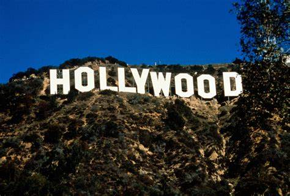
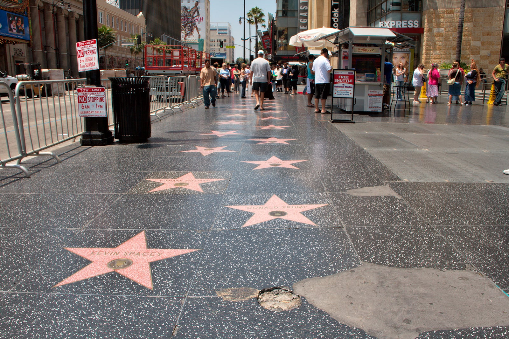
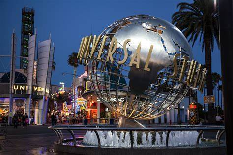
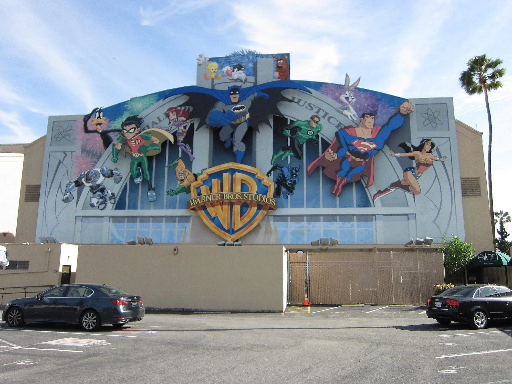
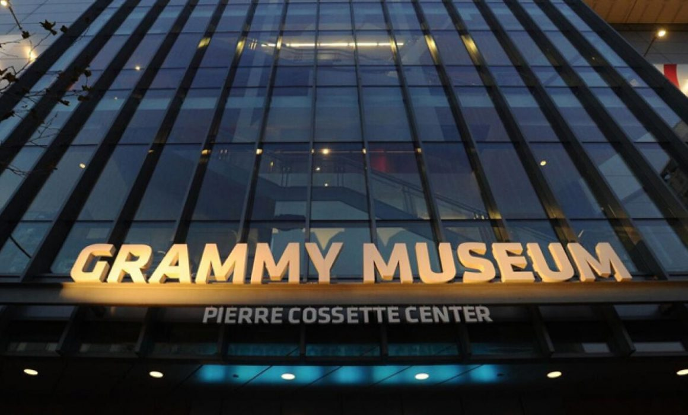
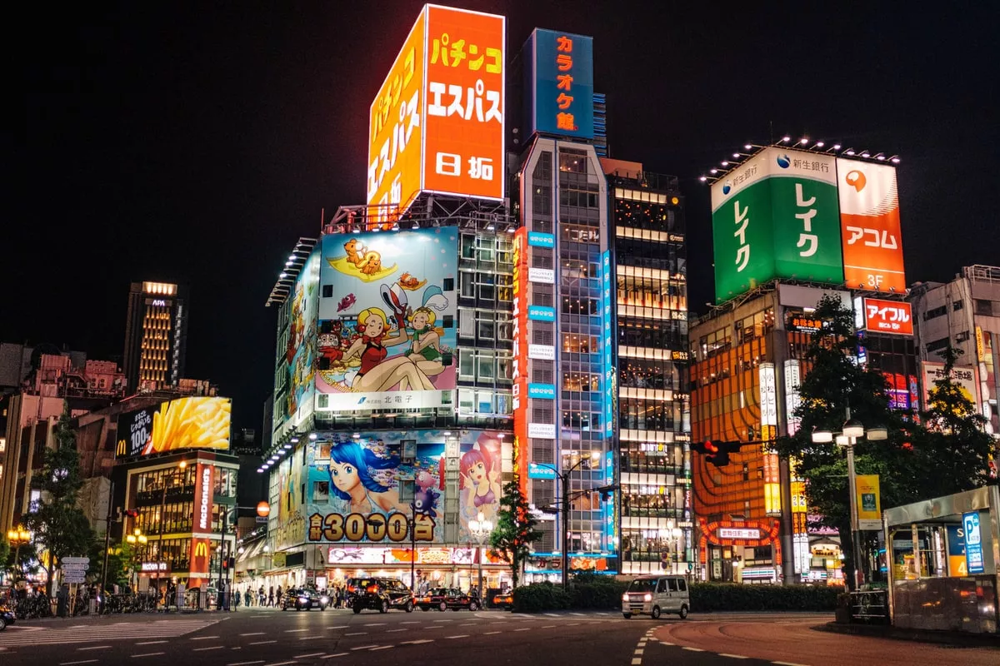
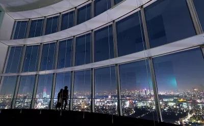

| Nome | Cognome | Età |
|---|---|---|
| Riccardo | Giordano | 17 |
Sono uno studente dell'Itis Einstein De Lorenzo e mi piace l'informatica. Finita la scuola vorrei fare il programmatore di videogiochi importanti, o fare il regista. Poichè nel tempo libero mi diverto a scrivere film, realizzarli ed editarli
I MIEI HOBBY
- Studiare
- Andare in palestra
- Fare i film
- Editare i video
- Scrivere libri
- Doppiare
I VIAGGI CHE VORREI FARE
La città che vorrei più visitare è la città del cinema. Hollywood. In quanto sono molto appassionato di cinema poichè li realizzo, ma non solo, mi piace anche guardarli. Mi piacerebbe, un domani, anche incontrare attori e registi famosi.

Il secondo viaggio che mi piacerebbe fare è quello di visitare Los Angles. Mi piacerebbe visitare a Los angles:
- Hollywood Walk of Fame

- Universal Studios Hollywood

- Tour degli studi Warner Bros

- Il Museo dei Grammy

L'ultima città nella top tre che vorrei visitare è Tokyo. Tokyo mi piace soprattutto perchè è molto avanti con la tecnologia. Mi piacerebbe vedere anche templi antichi e scoprire di più sulla mitologia giapponese. Le cose che vorrei vedere a Tokyo sono:
- Parco di Kinuta
- Shinjuku

- Roppongi


- Palazzo imperiale

- teamLab Planets


- Museo Miraikan

- Monte Fuji

I FILM E I GENERI DI FILM CHE MI PIACCIONO
- Star Wars
- Marvel
- Sci-fi
- Spionaggio
- Fantascienza
- Giallo
- Mistero
- Azione
Ecco la mia musica preferita: